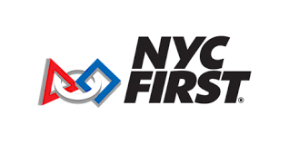
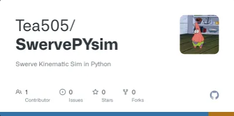
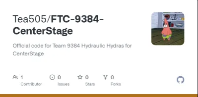

About Me
Hi, I'm currently a student at Borough of Manhattan Community College, expected to graduate in December 2026. I'm a passionate student who loves robotics and writing clean, reusable code. I enjoy working on projects that challenge my skills and allow me to learn new technologies.
Work Experience

IT Specialist July 2024 — Present
- Configured and maintained 30+ workstation hardware, including structured wiring, cable management, and peripheral setup.
- Troubleshot and resolved network connectivity issues, improving system reliability and reducing downtime.
- Deployed and supported end-user hardware, such as dual-monitor configurations, docking stations, and input devices, ensuring seamless integration with enterprise systems.
Volunteer Experience

NYC FIRST Aug 2020 — Present
FIRST Technical Advisor | (Sept 2025 — Present)
- Lead technical operations at official FIRST Robotics events, ensuring full compliance with safety, gameplay, and AV standards outlined by FIRST HQ.
- Oversaw venue infrastructure and AV system setup, collaborating with IT and facility teams to ensure competition readiness and technical integrity.
- Managed deployment, calibration, and teardown of the official FTC field, coordinating closely with FTAAs and Field Supervisors to maintain system accuracy and component reliability.
- Provided advanced diagnostics and real-time troubleshooting for robot communication, control system, and field hardware/software issues.
- Partnered with referees and scorekeepers to validate match data and resolve gameplay anomalies efficiently, ensuring accurate scoring and fair competition.
- Maintained close communication with FIRST and local partners to escalate and resolve critical issues, enabling seamless event execution.
- Supported event flow by assisting with field reset, team queuing, and match logistics when required.
FIRST Technical Advisor Assistant | (Sept 2023 — August 2025)
- Supported the FTA in configuring and maintaining the FTC field electronics, network infrastructure, and control systems during regional and district events.
- Troubleshot robot-field communication issues (FMS, driver station, radio, etc.), ensuring teams maintained connectivity and system stability during matches.
- Provided on-site technical assistance to teams, guiding them through debugging processes, firmware updates, and hardware inspections.
- Collaborated with referees, scorekeepers, and the event management system (EMS) team to maintain synchronization between match data and real-time scoring.
- Assisted with the setup and validation of field sensors, control cabinets, and critical infrastructure prior to competition.
- Contributed to a collaborative and technically supportive environment, reinforcing FIRST values while optimizing competition reliability.
Projects

TeaLib
A library that simplifies common tasks and provides utility functions for developers in First Tech Challenge.
View on GitHub
2D Swerve Simulator
A lightweight simulator that visualizes 2D swerve drive motion using Python, ideal for testing control logic and learning kinematics.
View on GitHub
FTC-9384 CenterStage
Official code for Team 9384 Hydraulic Hydras robot for CenterStage in First Tech Challenge.
View on GitHubSkills